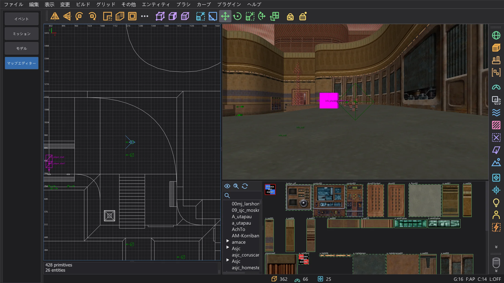
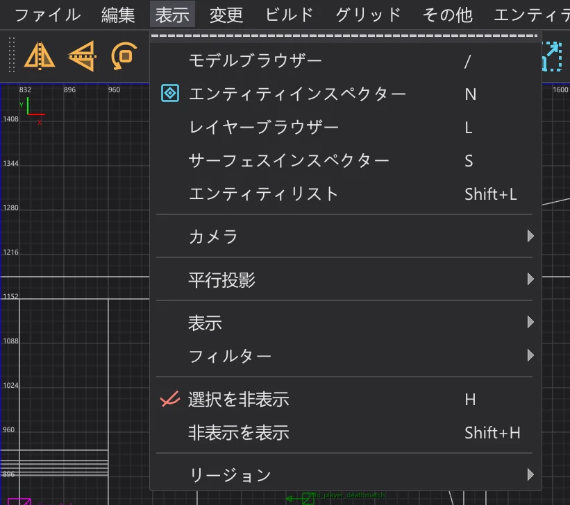
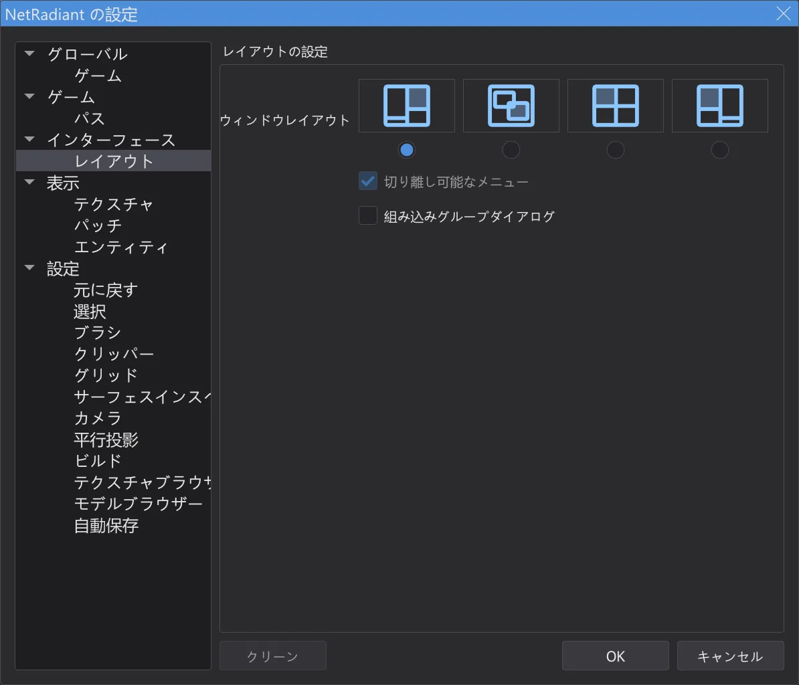
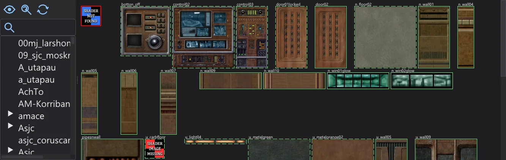
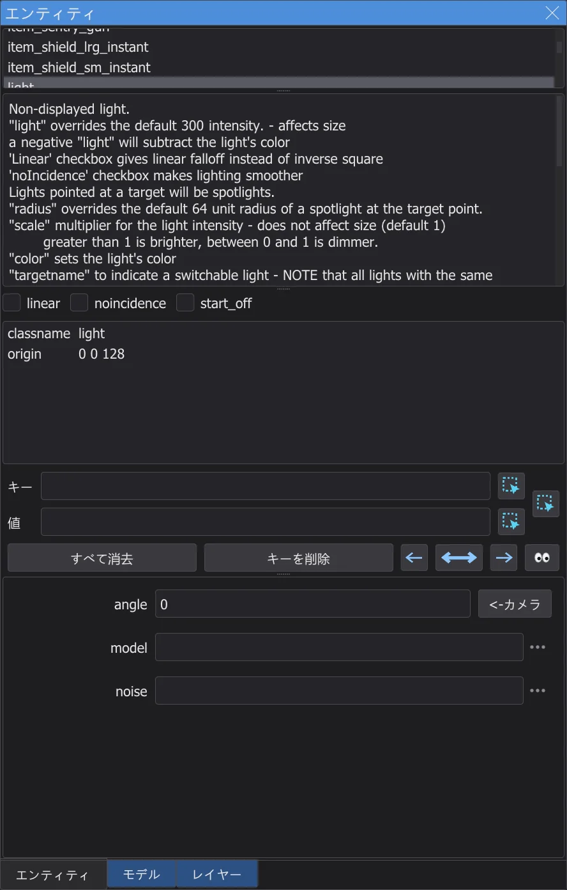
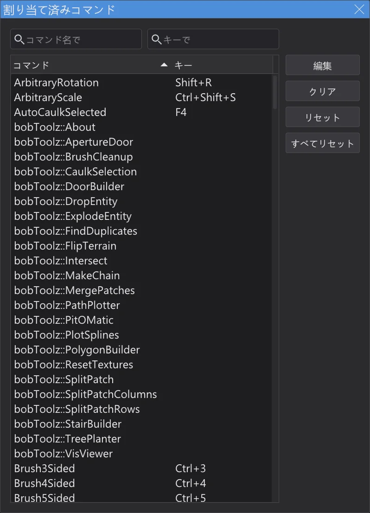

マップエディター
Jedi Academy と Jedi Outcast のマップを作成・編集します。メニュー、ウィンドウ、ショートカットは NetRadiant-Custom と同じなので、そのためのチュートリアルをそのまま順にたどれます。

マップを開く・保存する#
モードバーで マップエディター に切り替えます。エディターはプログラムに設定されているゲーム(Jedi Academy(Movie Duels も含む)または Jedi Outcast)と、そのテクスチャ、シェーダー、エンティティ定義を使います。初回はバックグラウンドで読み込みます。プログラムの設定にゲームフォルダーがないとテクスチャは表示されません。設定(ゲーム と パス ページ)で、マップエディターだけ別のゲームや別のフォルダーを使うこともできます。ファイル > 新規マップ で空のマップを始め、開く(Ctrl+O)で .map ファイルを、.bsp を開く でゲームのコンパイル済みマップを開き(マップエディター:完成したマップを開いて変更する ページ)、保存(Ctrl+S)と 名前を付けて保存 で保存します。NetRadiant-Custom と同じく、以前のファイルは .bak として残ります。最近開いたマップは ファイル メニューの下にあります。未保存の変更があるマップを閉じる前に、保存するかどうか確認します。
メニュー、ウィンドウ、レイアウト#
メニュー、ツールバー、ダイアログは NetRadiant-Custom(リリース 20260114)と同じ構成です。順序、区切り線、ショートカット、ニーモニック(Alt + 下線付きの文字)も同じです。表示はプログラムの言語、色はプログラムの配色から取ります。プラグインは マップエディター:プラグイン ページで説明しています。作成ツールは マップエディター:作成ツール ページ、q3map2 によるコンパイルは マップエディター:マップのビルド ページで説明しています。
マップエディターでは、プログラムのメニューバーが NetRadiant-Custom のメニューバー(ファイル … ヘルプ)になります。メニューバーはこの 1 本だけで、スクリプトのタブは隠れ、エディターはそのすぐ下から始まります。プログラムがここでも必要とするものは 2 つのメニューの末尾にあります。その他 には 言語、配色、拡大縮小、ヘルプ には マニュアル(F1、このガイド)と BehavEd について があります。NetRadiant の更新を確認 はこのプログラムの新しい版を探します。モードバーでモードを離れると、プログラムのメニューとタブが戻ります。
エディターの各ウィンドウ(2D ビュー、カメラ、コンソール、テクスチャブラウザー)には細い枠があり、どこで終わり次がどこから始まるかがわかります。その間には NetRadiant-Custom のグリップ付きのスプリッターがあります。アクティブなウィンドウ(最後にクリックしたもの)の枠は配色のアクセントカラーで表示されます。NetRadiant-Custom がアクティブな 2D ビューを縁取るのと同じです(2D ビューでは 表示 > 表示 > ウィンドウ枠を表示 でオフにできます)。スプリッターをドラッグするとサイズが変わります。端までドラッグするとウィンドウは折りたたまれ、また引き出せます。

編集 > 設定(P)には NetRadiant-Custom の設定があります。レイアウト ページでウィンドウレイアウト(標準、フローティング、分割、標準(左))と、エンティティとテクスチャのグループダイアログをメインウィンドウに組み込むかどうか(組み込みグループダイアログ)を選びます。新しいレイアウトは OK を押すとすぐに反映されます(NetRadiant-Custom では再起動が必要です)。フローティング ではウィンドウはプログラムのウィンドウ内に浮かびます。

2D ビューとカメラ#
| 右ドラッグ(2D) | ビューをスクロール |
| ホイール、Alt + 右ドラッグ(2D) | ズーム |
| Ctrl + Tab | 次の 2D ビュー(XY、XZ、YZ) |
| 中ボタン(2D) | カメラをその点に向ける。Ctrl 付きでカメラをそこへ移動 |
| カメラで右クリック | フリールックのオン/オフ。マウスで視点を回し、W A S D または矢印キーで移動 |
| 矢印キー(カメラ) | 前進、後退、旋回。A / D で横移動、ホイールで前後に移動 |
| Tab | カメラを選択範囲に向ける |
| Shift + [ / ] | カメラの描画方法(ワイヤーフレーム、フラット、テクスチャ…) |
| [ / ] | グリッドを小さく / 大きく。1〜9 で直接設定(1〜256 ユニット) |
選択と作成#
| 左クリック | マウスの下にあるものを選択。同じ場所をもう一度クリックすると、その奥にあるものを選択 |
| Shift + 左ドラッグ | マウスが通過したものをすべて選択(または選択解除) |
| Shift + 右ドラッグ | 矩形で選択 |
| Ctrl + 左ボタン(カメラ) | 個々の面を選択 |
| 選択範囲を左ドラッグ | 移動。選択したブラシの横では面を引っ張ってサイズを変更 |
| 何もない所を左ドラッグ(2D、未選択) | 現在のテクスチャで新しいブラシを作成 |
| Esc | 選択を解除 |
| Space | 選択範囲を複製 |
| Delete | 選択範囲を削除 |
| Ctrl + Z | 元に戻す |
| Ctrl + Shift + Z | やり直す |
| Ctrl + C / V | コピー / 貼り付け |
| H | 選択範囲を隠す |
| Shift + H | 隠したものをすべて表示 |
テクスチャ#

テクスチャブラウザーはゲームのテクスチャとシェーダーをフォルダーごとに表示します。標準 レイアウトではカメラの下にあり、他のレイアウトでは 表示 > テクスチャブラウザー(T)で開きます。テクスチャをクリックすると現在のテクスチャになり、選択したブラシや面に適用されます。中ボタンは選ぶだけです。右ドラッグでスクロール、右クリックでテクスチャのメニューを開きます。カメラでは、面を中ボタンでクリックするとそのテクスチャを拾い、Ctrl や Shift と一緒に使うと NetRadiant-Custom と同じく現在のテクスチャを面に塗ります。
エンティティ#

2D ビューで(マウスを動かさずに)右クリックするとエンティティメニューが開きます。クラスを選ぶとその位置に新しいエンティティを置きます。ブラシを選択した状態で func_door などのブラシクラスを選ぶと、そのブラシがそのエンティティになります。表示 > エンティティインスペクター(N)は選択したエンティティを表示します。クラスと説明、チェックボックスの spawnflags、すべてのキーと値、クラスが知っているキーの入力欄です。キーと値を入力して Enter で設定します。表示 > エンティティリスト(Shift+L)はマップのすべてのエンティティの一覧です。エンティティ > エンティティを接続(Ctrl+K)は選択した 2 つのエンティティを target と targetname でつなぎます。
コンソール#
コンソール(標準 レイアウトでは 2D ビューの下、それ以外は 表示 > コンソール、O)には NetRadiant-Custom と同じメッセージが出ます。読み込んだもの、見つからないテクスチャやシェーダーの警告、読み込みと保存にかかった時間です。
ショートカット#

マップエディターは NetRadiant-Custom のショートカットを使います。マップエディターが表示されている間有効で、その間プログラム自体のショートカットはオフになります。編集 > ショートカット(Ctrl+Shift+P)はすべてのコマンドとキーの一覧です。上の欄でコマンド名でまたはキーで検索できます。コマンドをダブルクリック(または 編集)して新しいキーを押します。クリア でキーを外し、リセット で NetRadiant-Custom のキーに戻し、すべてリセット ですべて戻します。キーがすでに別のコマンドに割り当てられている場合は、先に確認します。
[ と ] に AltGr が必要な場合(ドイツ語配列:AltGr+8 / 9)も、そのまま使えます。[ と ] でグリッドを変更し、Shift+AltGr+8 / 9 は Shift+[ / ] になります。ただし Ctrl+[ と Ctrl+](遠クリップ面を近づける / 遠クリップ面を遠ざける)は押せません。AltGr 自体が Ctrl+Alt として扱われるためで、NetRadiant-Custom とまったく同じです。メニュー 表示 > カメラ を使うか、割り当て済みコマンド でコマンド CubicClipZoomIn と CubicClipZoomOut に別のキーを割り当ててください。